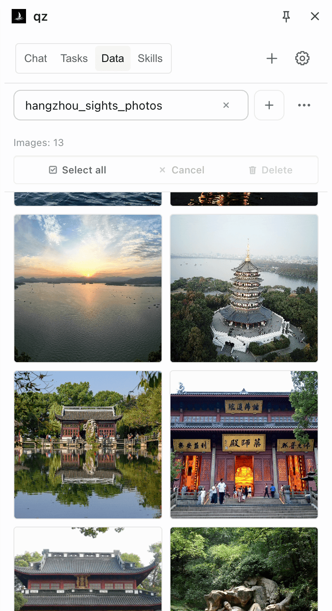
Collect images with their sources
Save photos from a page to a local collection. Browse thumbnails and open the source image. Shown here: Hangzhou landmarks from Wikipedia.
OPEN SOURCE · LOCAL FIRST
A coding agent that lives in your browser. It opens tabs, reads pages, runs scripts, and turns what works into a Skill.
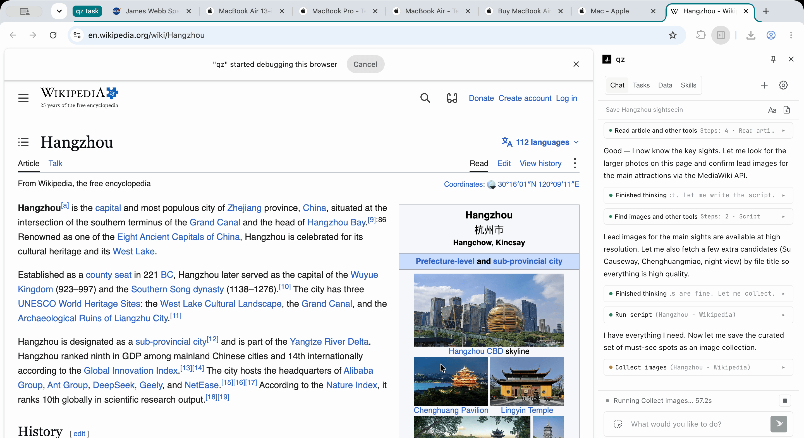
Each example is a real qz session. The frame on the left is from that session. Follow every step on the right, then import it into qz and pick up the conversation.
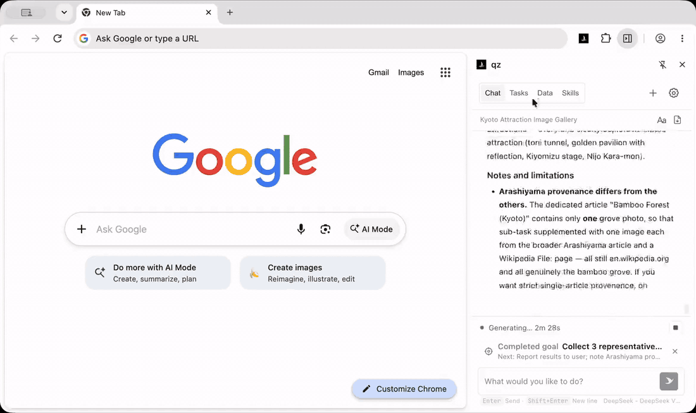
5 sub-tasks run at once, each finds its own pictures, and the results merge into one gallery.
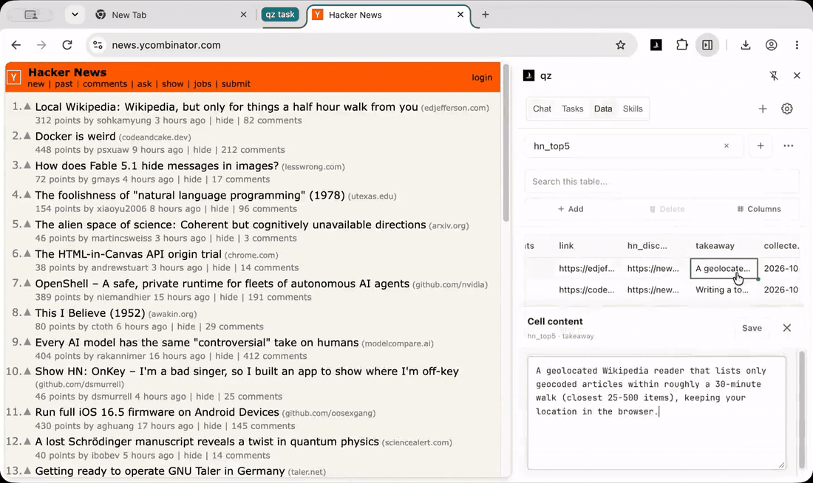
Sorts out the top 5 posts on the front page, then saves the method as a Skill you can reuse with one sentence.
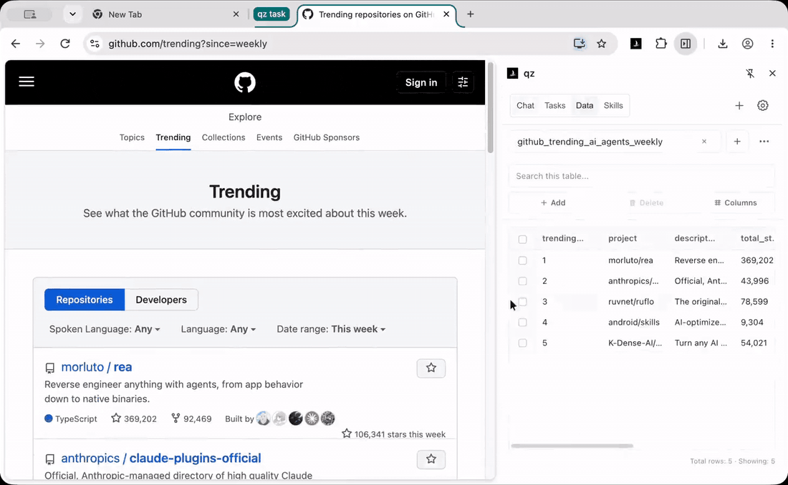
Reads this week's Trending list, puts it into a table, and writes a short weekly summary.
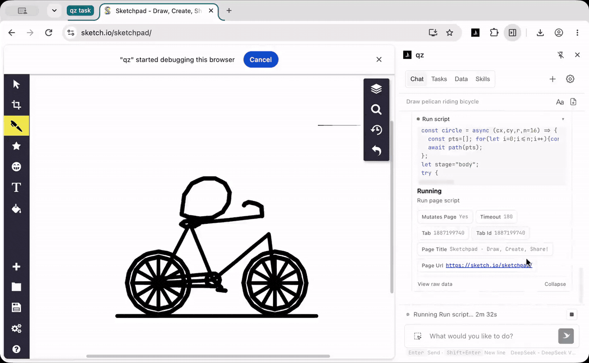
Operating the UI like a person.
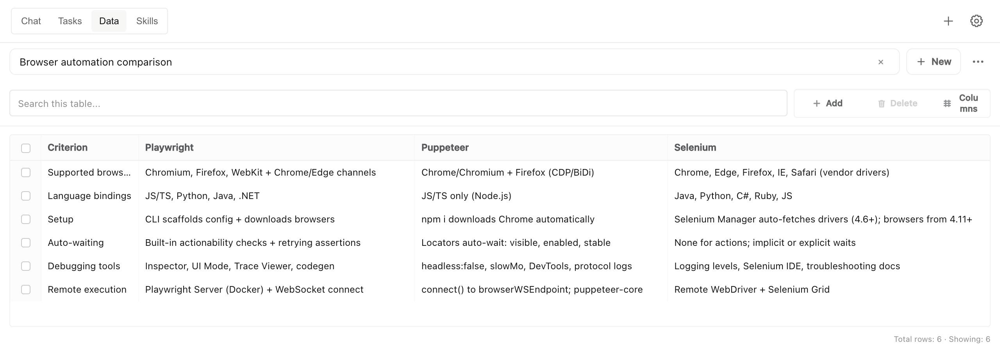
qz read the Playwright, Puppeteer, and Selenium docs and saved a six-criterion comparison. The result is a table you can edit and export.

Save photos from a page to a local collection. Browse thumbnails and open the source image. Shown here: Hangzhou landmarks from Wikipedia.
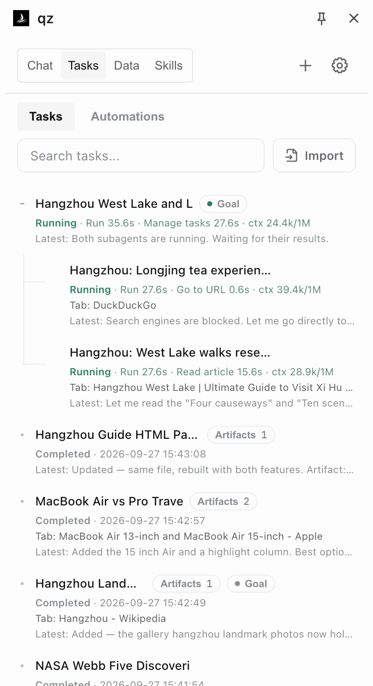
Delegate parts of a task and combine the findings. Here, agents research West Lake walks and Longjing tea experiences for a Hangzhou itinerary.
This Wikipedia Skill finds city photos and displays the results in an image grid. Its instructions, scripts, and UI can be reused on another city’s page.
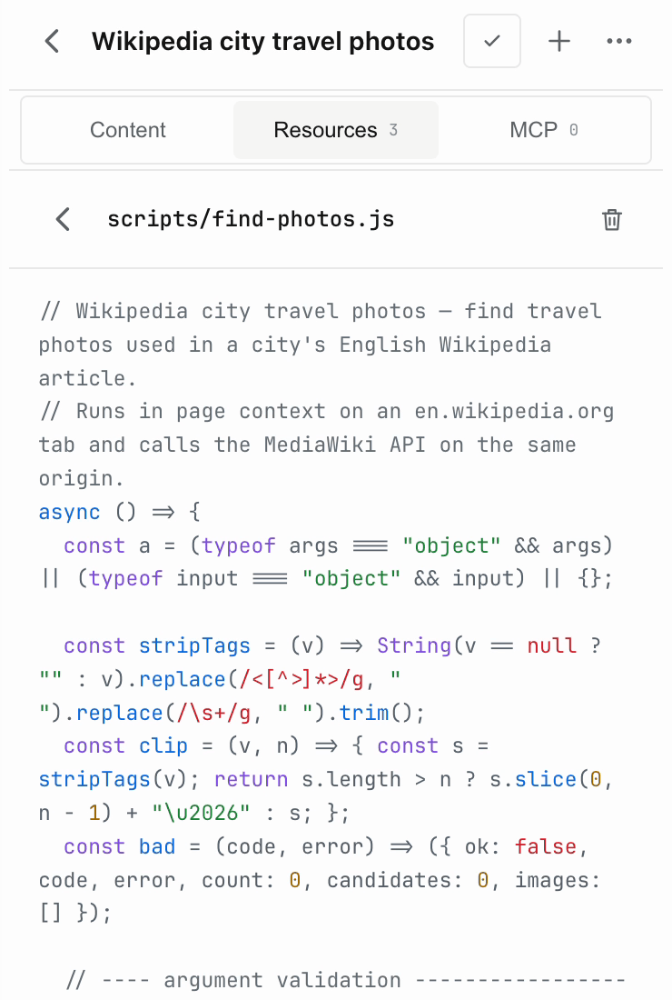
Inspect and edit a Skill’s JavaScript resources directly in the panel.
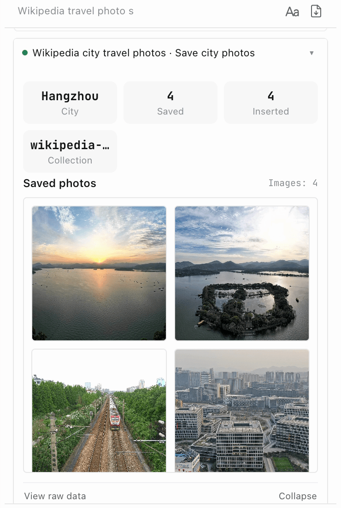
Display tool results as summary cards, image grids, or tables inside the conversation.
Once a task works, just say “Save this as a Skill” to reuse it anytime. You can also install Skills from a Git repository.
See the exampleAdd agent tools, panel views, settings pages, or providers as compiled TypeScript modules.
Capability APILet your agent delegate browser tasks to qz.
YOUR TERMINAL / CODING AGENT
qz create "Compare Playwright, Puppeteer and Selenium. Save a sourced table." --streamI’ll read their official documentation and compare the tools.
Saved 6 comparison rows with source links.
qz data export "browser_automation_tool_comparison" --format csvbrowser_automation_tool_comparison.csv
qz / CHROME SIDE PANEL
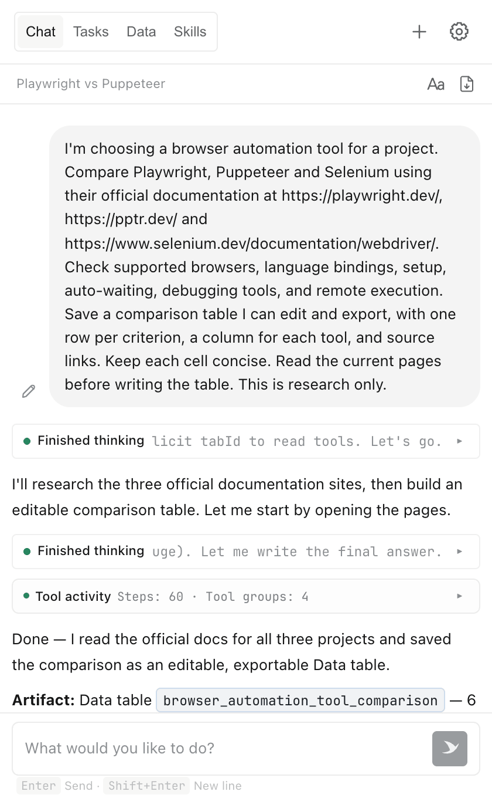
Requires Node.js 22+ and Chrome on the same machine, with the qz extension and a model configured.
Connect once. Start tasks from your terminal.
npm install --global qz-browser-agent
qz connectAlso available via npx --yes qz-browser-agent@latest. For MCP, run qz mcp after connecting to get the connection URL.
Let your coding agent delegate browser tasks to qz.
npx skills add alibaba/qz-browser-agent -gThen ask your agent: “Use qz to compare these three product pages and save a sourced table.”
Read the SkillSessions, Skills, and collected data are stored in your browser. Use a compatible model service with tool calling, a local model server, or OpenAI Codex with ChatGPT sign-in.
Task context is sent to your configured model service. Skills and MCP connections may exchange data with services you configure.
Permissions & data flowInstall from the Chrome Web Store, then connect your model service or sign in with ChatGPT.
Add to ChromeManual install · GitHub ReleaseIn the Chrome Web Store, click “Add to Chrome” and confirm the installation.
Open qz Settings. Choose a provider and enter its credentials, or choose OpenAI Codex and sign in with ChatGPT. Select a model and save.
Open the side panel and describe what you want to do. You can adjust the task while it runs.
Find this year’s Nobel Prize winners in every category and put them in a table with source links.